Free filter pack · CampSnap Pro
CampSnap Pro Filters
23 film looks for the CampSnap Pro, free to download. See every filter with its sample shots, download one already named for the camera slot you want, or take the whole pack.
Filter tracker
What's on each slot of your camera.
Saved in this browser only. Privacy notice
How to Use
- Choose your filter(s)
- Rename them to the filter name you want to replace:
std.flt,vtg1.flt,vtg2.flt,bw.flt - Copy
.fltfiles to your CampSnap Pro's memory card (at the root). - Select a filter in-camera.
- Shoot with authentic film/video character baked in.
Any filter works in any slot: a colour look in the B&W slot is fine, and so is the other way round.
The filters
Lab Archive, Vol. I: A catalogue of analogue behaviour for digital tools.
About this pack
Lab Archive, Vol. I is a deliberately curated ledger of looks drawn from the culture of consumer film, professional slide stocks, and the stray accidents that defined print-lab history.
The intent is not nostalgia for its own sake, but a faithful cataloguing of palette, contrast behaviour, and tonal rolloff as they were commonly seen in the wild.
Each filter is treated like an indexed process: a known response under daylight, tungsten, and mixed light; a recognizable bias in greens, skies, and skin.
You are not buying a fantasy. You are acquiring a set of working behaviors you can call on with precision.
Within the set you will find three families: everyday consumer color with characteristic warmth and scan bias; professional slide and negative references built for clarity and controlled saturation; and monochrome treatments that prioritize density, texture, and separation.
Used well, these looks disappear into the work, the way a reliable stock disappears into a photographer's muscle memory.
Best practice mirrors the darkroom: expose with intent, compose for contrast, and decide whether you need separation or mercy in the mids.
This volume is a reference shelf-quiet, exact, and prepared for field use.
01 Golden '92
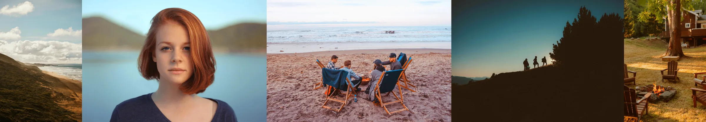
An archival interpretation of Lomochrome Color '92, the late century experiment in altered spectral response.
The emulsion's warm-channel priority produced golden midtones and subdued blues, a palette that defined low cost minilab prints through the early 90s.
In this translation, contrast is moderated and the white point allowed to breathe, yielding soft amber density without loss of structure.
Why it matters: this look recreates the approachable warmth of consumer color in its final analog decade sentimental, inexpensive, and chemically earnest. The gold cast arrives not from grading but from the dye hierarchy itself, where yellow overtook cyan in both time and chemistry.
When to use: open daylight, late summer travel, interior tungsten. It excels where memory, not measurement, is the brief.
Finishing: fine grain simulation restores the tactile softness of 200 speed negative; gentle halation completes the nostalgic bloom.
02 Eternal Hour
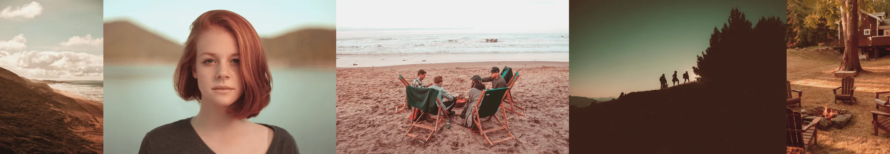
A measured warm bias designed to simulate the familiar envelope of late day sun without theatrical overreach.
Midtones acquire a gentle amber lift, shadows retain structure so that form remains legible, and highlights roll to a soft shoulder rather than flaring.
The cumulative impression is everyday scenes rendered as memory rather than as a light meter report.
Unlike aggressive warmth treatments, this variant protects sky discipline and avoids orange skin.
Why it matters: everyday pictures deserve coherence. This look serves as a dependable baseline for family work, travel notes, or portraits where warmth should be felt, not announced. It reproduces the calm density many prints carried when they were well exposed and gently processed at the lab, granting a sense of continuity across frames and sessions.
When to use: daylight, open shade, and interiors with window light. It tolerates a stop of overexposure for an airier rendering without breaking apart.
Keep compositions simple; let amber mids carry the mood while edges remain crisp.
Finishing: add a small grain layer if desired, and a very light halation on speculars. A subtle vignette can focus the field on faces, but avoid heavy cornering The strength of this profile is its natural, evenly lit read.
03 Street Cool
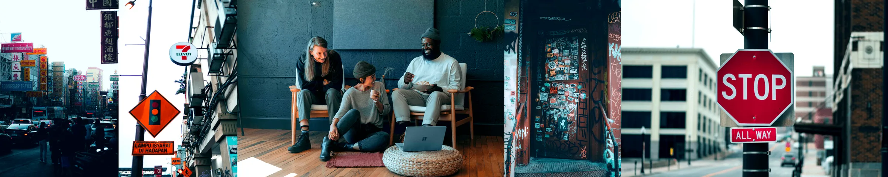
A city first palette that brings order to steel, concrete, and glass.
Shadows lean cool to preserve separation in dense structure while mids remain clean so skin and signage remain intelligible. Reds are tamed to avoid advertising glare, cyans and magentas are given quiet presence. The contrast profile is deliberate: enough bite to define edges, restrained enough to keep night detail from collapsing.
Why it matters: urban subjects punish imprecision. This look reads as contemporary without abandoning the film lineage controlled color, breathable mids, and measured blacks. It is an excellent default for reportage where you want factual color with a slight nocturnal poise.
When to use: city canyons, overcast afternoons, transit hubs, and blue hour. It handles mixed light gracefully, especially sodium and LED together, keeping the palette legible.
Finishing: add fine grain if you want a newsprint edge. Subtle clarity or micro contrast can emphasize architectural lines, avoid heavy sharpening on faces.
04 Deep Separation
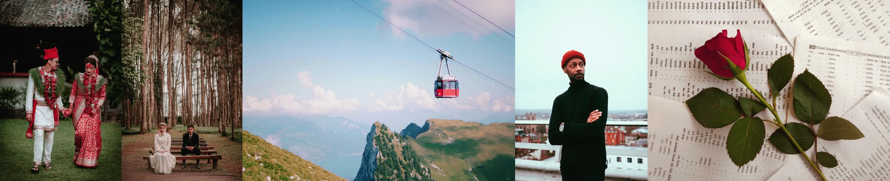
A separation study for portraits where subject precedence is non-negotiable.
Background hues, particularly greens and reds, are driven into denser registers while faces keep a quiet luminance, producing a theatrical depth without cartoon saturation. Contrast is assertive but centered in the lower mids so that skin retains volume.
The effect resembles careful gel work or layered printing: the world deepens, the person holds.
Why it matters: not every portrait needs mercy. Some require intent and gravity. This profile creates space around the subject without resorting to blur or heavy vignetting, giving you editorial presence straight out of camera.
When to use: staged portraits, backlit environments, foliage backgrounds, rim-lit dusk. It is unsuited to delicate pastel scenes; deploy when you want command, not whisper.
Finishing: minimal. If required, a restrained bloom on highlights can polish the theatrical cue. Keep grain fine so the separation remains the story.
05 Vivid Landscape
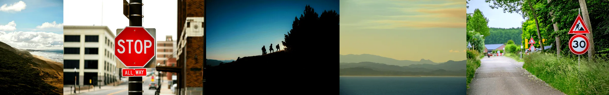
A saturated, high structure palette for terrain and weather.
Greens and blues step forward, reds retain a dignified weight in rock and foliage. The contrast curve is firm with a disciplined midtone to maintain separation across distance. Skies carry color and depth without bleeding into the horizon, water holds detail in ripples and shadowed coves.
Why it matters: landscapes often demand assertive color to match memory and effort. This treatment celebrates saturation without dissolving into posterization, staying printable across papers and sizes.
When to use: open daylight, post storm clarity, alpine shade, coastlines at midday. It is less forgiving for portraits; reserve it for places where geology and weather are the subject.
Finishing: subtle clarity and a touch of grain can introduce scale. Keep halation minimal unless you want intentional glow at the sun edge.
06 Crimson Dusk
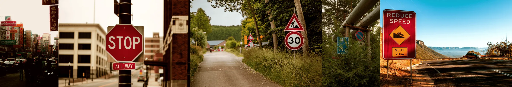
A controlled red emphasis that deepens through the spectrum toward crimson while protecting orange from flattening.
Shadows adopt a faint cyan countercast that prevents the frame from choking, keeping night and late day scenes legible. The mood is deliberate; autumn canopies, neon reflections, and sun rims take on a theatrical density without turning lurid.
Why it matters: red is notoriously hard to manage. This profile offers a usable, printable red that carries emotion and edge. It is a specialty tool for when scarlet detail is the story.
When to use: blue hour, city signage, late sun through leaves, interiors with tungsten accents. Avoid close portraits unless a red bias is intended.
Finishing: mild bloom on highlights completes the cinematic read, hold back on global saturation to keep the discipline intact.
07 Neutral Transparency
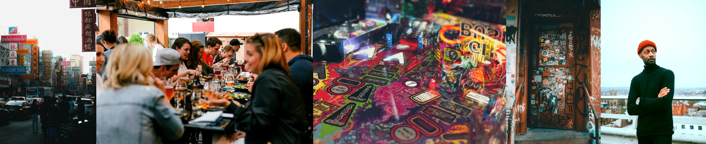
A slide like neutrality with a measured cyan green inclination.
The aim is clarity: skies that do not blare, foliage that keeps its structure, and neutrals that print cleanly without corrective gymnastics. Micro contrast is modest to preserve edge fidelity, color is present but not performative.
It is the look you want when accuracy is the brief and consistency is the schedule.
Why it matters: editorial and catalog work value repeatable behaviour. This rendition offers disciplined color and responsible contrast, making sequences cut together without visible drift.
When to use: controlled daylight, product and travel documentation, any situation where you intend to grade selectively afterward. Because the base is honest, small directional edits land precisely.
Finishing: fine grain can simulate light-table provenance. Consider subtle clarity for edge definition; avoid saturation spikes that break the slide illusion.
08 Complexion Priority
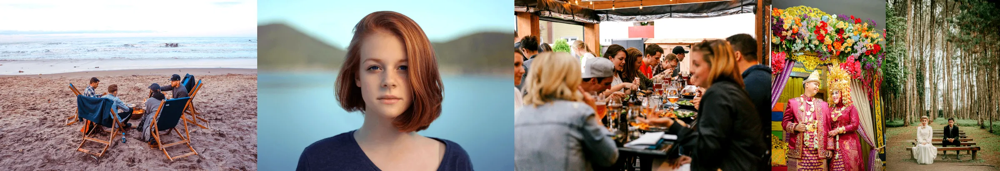
A portrait first profile that lends energy to faces without turning them orange or plastic.
Midtones warm just enough to quicken complexion, while surrounding greens and blues remain orderly so that parks, coastlines, and street scenes do not contaminate skin. Contrast is held in check to keep pores and texture humane; highlights roll smoothly to protect specular points on cheeks and eyes.
Why it matters: people live in mixed environments, and portraits cannot rely on perfect backdrops. This look tilts the equation toward the subject with restraint, creating flattering frames that still feel like the world you were in.
When to use: travel candids, editorial lifestyle, portraits against foliage or water. Meter for the face; allow the background to sit half a stop down for natural separation.
Finishing: a small bloom can add magazine polish. Keep sharpening light-edge acuity is already adequate out of the profile.
09 Pastel Shoulder
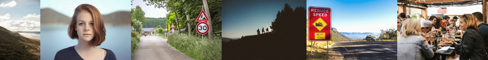
Derived from Portra 400's over exposure curve. This filter reproduces the film's graceful highlight shoulder and reduced chroma under strong light.
Saturation folds inward, micro contrast softens, and skin acquires a diffused warmth that reads as light rather than pigment.
Why it matters: the Portra lineage solved a perennial printing problem; how to keep texture inside white fabric and pale skin without clipping. This interpretation honours that discipline while offering a luminous, pastel register suitable for modern sensors.
When to use: high key portraiture, sunlit interiors, ceremonies, and open shade. Overexpose by roughly one stop for the full airy roll off.
Finishing: pair with mild halation or diffusion to echo optical bloom; avoid heavy clarity which breaks the filmic continuity.
10 Ceremonial Wash
An airy rendition built for garments and skin under bright ceremony light.
Contrast is lowered to open the fabric's weave and protect the highlight shoulder, while saturation is reduced so bouquets and decor do not overwhelm complexions. The whites here glow rather than clip, shadows lighten without turning to fog.
It is a quiet correction for a notoriously challenging environment: veils, reflective surfaces, and variable daylight all in the same frame.
Why it matters: skin and textile detail must survive the day. This treatment keeps tonal information available for printing while maintaining the luminous character clients expect. It avoids trendy color casts and focuses on clarity and grace.
When to use: ceremonies, editorials with white garments, high key interiors. The profile tolerates modest overexposure and rewards careful metering on faces.
Finishing: gentle halation reads beautifully on specular edges; a touch of diffusion can soften transitions without sacrificing the cut of a suit or dress.
11 Drugstore Green
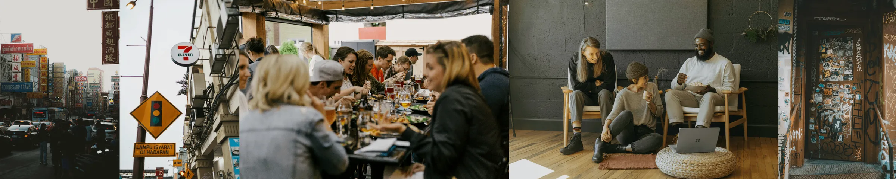
A faithful study of mid 90s consumer minilab output: slightly lowered white point, firm blacks, and a faint green bias inherited from common Fuji leaning calibrations.
Highlights sit down rather than shouting. Color remains present but tempered, producing the shoebox of prints atmosphere so many family archives share.
Reds and blues are disciplined, preventing the cartooning that cheap scans sometimes introduced. The effect is not antique, it is simply honest about how the era's chemistry and optics tended to resolve everyday scenes.
Why it matters: documentary work thrives on believable tone. This treatment gives context and time without gimmick, letting expressions and environments do the talking. It suggests machine prints and satin paper without forcing faux aging.
When to use: neighbourhood streets, supermarkets, back gardens, low winter sun. Works well with textures; brick, fabric, foliage. Where the slight suppression of highlights allows detail to hold.
Finishing: grain takes beautifully here. Light leaks or borders can be added for narrative effect, but the profile stands on its own as a credible consumer print reference.
12 Instant Bloom
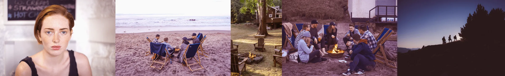
A chromatic diffusion study drawn from integral Polaroid chemistry.
The instant print process often allowed magenta dyes to outrun cyan during development, producing the familiar rose tinted glow.
Here, that imbalance is recreated through warm shifted highlights and a cool cyan counter shadow, establishing the gentle push pull that defined late era instant color.
Why it matters: the Polaroid palette was less an error than a signature; chemical impatience turned aesthetic rule. This filter restores that immediacy without the unpredictability of reagent spread.
When to use: portraits in window light, reflective interiors, and dusk scenes that invite emotional color. Works best on materials that can absorb the pink aura; skin, cloth, fog.
Finishing: a narrow vignette or halation accent enhances the instant print illusion; keep contrast low to preserve diffusion.
13 Pastel Memory
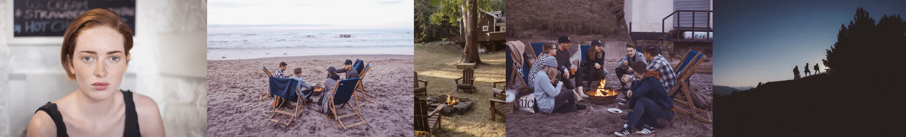
An aged print simulation that emulates the slow fading of consumer color dyes.
Midtones lose intensity, edges soften, and overall warmth settles into the paper stock rather than the scene. Reds relax to coral, blues drift toward gray, and greens desaturate into a calm neutrality.
The impression is of a photograph remembered, not freshly made.
Why it matters: real archives show how color ages unevenly. This filter respects that entropy and turns it into mood. It creates visual distance without artificial sepia or texture overlays.
When to use: interiors, vernacular streets, travel diaries, or any frame seeking understatement. Especially effective where the subject already suggests time passing.
Finishing: a fine grain layer and gentle vignette simulate aged enlargement; maintain moderate exposure for authenticity.
14 Classic Dispo
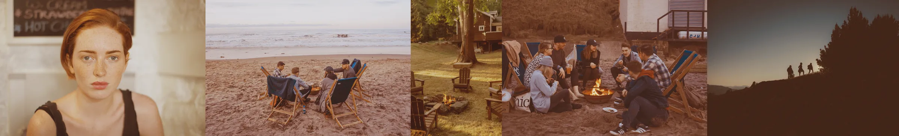
An honest disposable camera reference: contrast lowered, exposure pulled back, and a yellow green tendency that pushes blues toward surrender.
Skin keeps little pockets of red that survive across scenes; signage, cheeks, the accidental highlight, creating a lived in palette. The image reads like a collection of nights out and kitchen tables, not a studio exercise.
Why it matters: this is the vernacular of the 90s and 00s, the look of impulse and proximity. It has cultural truth baked in, with enough discipline here to stay printable.
When to use: parties, street portraits, low light with flash or sodium spill. Avoid mission critical work; this is a character filter, not a safety net.
Finishing: a light vignette or halation enhances the lab made wonk without turning the frame into pastiche.
15 Crimson Register
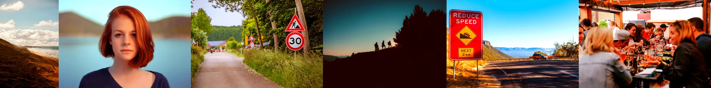
A warm channel expansion derived from Konica Centuria's handling of reds under daylight.
The response curve favours mid spectrum crimson while maintaining a cool counter in the shadows, producing a balanced, printable energy.
Brick, foliage, and signage take on the assertive warmth familiar to late s90s emulsions without collapsing into over saturation.
Why it matters: few stocks managed red with grace. This study isolates that tonal dialogue for reliable reproduction. It restores color intensity to urban material without digital glare.
When to use: street scenes, markets, urban facades, and architecture in hard light. It enlivens static compositions where color carries the narrative.
Finishing: avoid global saturation boosts; instead apply controlled grain or mild bloom to maintain chemical plausibility.
16 Cool Lab Slip
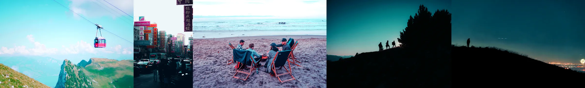
A study of the common cool drift introduced by lab calibration and budget scanners.
Shadows shift toward blue magenta while highlights remain near neutral, preserving credibility in skin and paper whites.
The net effect is a subtle dissonance; neon hums, store fronts glow, and night streets feel freshly washed.
Why it matters: many archives owe their mood to process, not shooting. This filter reproduces that specific slip with control, allowing you to carry the atmosphere without inheriting the chaos.
When to use: night work, wet pavements, interiors with mixed LED. Daylight will read cooler but serviceable; the profile earns its keep after sunset.
Finishing: bloom on point light sources completes the scan -era memory; keep grain modest to avoid muddying the cool shadow architecture.
17 Riviera Cyanotype
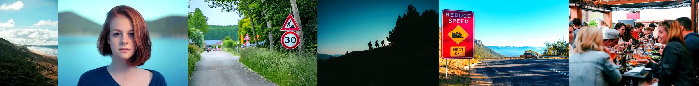
Inspired by coastal negatives and travel transparencies of the 60s to 80s.
This profile compresses glare and accentuates the blue cyan register typical of seaside postcard color.
Whites remain pure but textured; seafoam greens lean toward teal, anchoring the Mediterranean ideal of chromatic cleanliness.
Why it matters: overexposed daylight near water demands control, not restraint. This filter models the blue channel compression once achieved through precise enlarger filtration, preserving detail without bleaching.
When to use: maritime daylight, harbours, and reflective architecture. It translates both sky and sea without surrendering midtone neutrality.
Finishing: slight clarity enhancement reinforces the mineral texture of salt and sand; minimal grain keeps the image modern yet tactile.
18 Chromatic Storybook
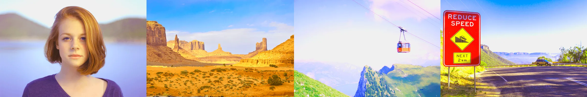
A controlled exaggeration of color separation inspired by late century art direction and Wes Anderson's engineered palettes.
Saturation climbs beyond natural register, shadows compress, and highlights bloom into cream. Every hue moves toward its pastel apex; turquoise skies, peach skin, ochre stone.
The result is theatrical rather than realistic, yet still grounded in photographic tone curves.
Why it matters: this is a study in deliberate excess, what happens when harmony overrides fidelity. It recalls the precision of chemically manipulated reversal film, where hue placement became composition.
When to use: constructed sets, fashion, editorial stills, or any frame seeking narrative artifice. A little goes far.
Finishing: add mild diffusion or tilt shift blur for dioramic effect; avoid extra saturation, the look already sings.
19 Isle of Ochre
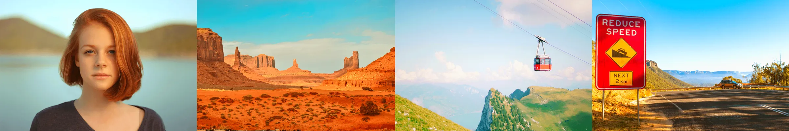
A pigment biased treatment referencing the ochre deserts and sun bleached towns of Anderson's imagined worlds.
Blues and greens withdraw into beige; yellows dominate with the dryness of expired slide film stored too warm. Shadows carry fine dust, and midtones flatten to the texture of paper.
The frame reads like an archival print found inside a travel log rather than a contemporary exposure.
Why it matters: this look reproduces the thermal shift of aged reversal stock; a poetic, credible warmth unachievable by simple tinting. It gives daylight scenes an immediate sense of location and era.
When to use: exteriors, road narratives, sun aged architecture, or portraits needing cinematic dryness. Best under clear light.
Finishing: add halation to emulate heat haze; light grain reinforces the tactile surface of pigment paper.
20 Moody B&W
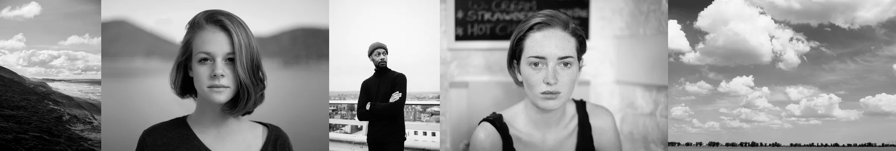
A monochrome rendering that privileges atmosphere over clinical detail.
Skies and seas accumulate weight, midtones rest lower for a classical print feel. Edges remain present but not knife edged, allowing faces and weather to share the frame without competition. The overall read is contemplative rather than aggressive.
Why it matters: not all black and white must announce itself with punch. This treatment honours nuance; fog banks, stone, and skin read as materials, not illustrations.
When to use: Overcast days, coastal work, portraits that benefit from quiet. Meter thoughtfully, placing key tones is the craft here.
Finishing: add a subtle vignette and a fine grain to complete the silver print impression.
21 Textured B&W
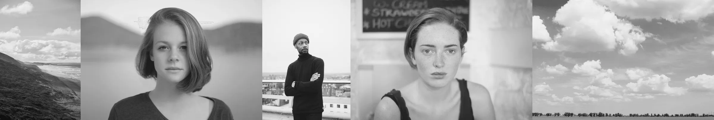
A study in surface.
The curve is shaped to lift detail in wood grain, fabric, and skin while keeping the overall contrast moderate. Highlights sit just beneath glare; blacks hold form at the edge of shadow. The intent is tactility; you can feel the wall, the handrail, the wrinkle in a coat.
Why it matters: many subjects are about touch rather than outline. This profile respects micro structure without descending into harshness, making it suitable for tight portraits and urban details alike.
When to use: close work, architectural studies, street fragments.
Finishing: gentle diffusion can lend a fine art surface, keep grain modest so texture, not noise, leads.
22 Charcoal Depth
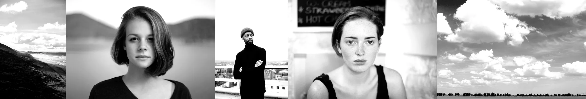
A heavy monochrome with decisive blacks.
Greens in the original scene tend to fall hardest, producing deep wells of tone, blues sit slightly higher to preserve separation around sky and signage. Edges read as silhouette and contour rather than micro detail.
It is unapologetically graphic, a print that announces the shape of things.
Why it matters: some frames benefit from severity. This profile gives you the poster strength of tarry blacks without losing navigational cues.
When to use: stairwells, alleyways, night streets, portraits requiring authority over gentleness. Expose for the midtone you cannot afford to lose, let the rest fall where it will.
Finishing: a controlled vignette will trap the gaze, consider edge blur to emphasize mass over texture.
23 Neutral
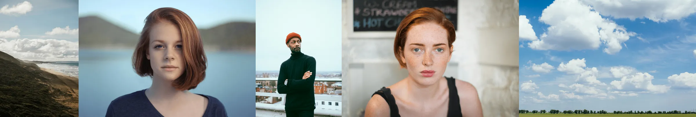
A technical baseline rather than an aesthetic profile.
This preset disables stylistic bias to produce a pure, uncoloured image from the CampSnap Pro sensor.
It exists for those who wish to author their own look or test the camera's raw behaviour.
About the CS Pro
The CampSnap Pro is CampSnap's simple, pocketable digital camera, made to shoot like a film point-and-shoot.
It reads its looks from .flt filter files on the memory card, one for each of four slots on the mode dial: Standard, Vintage 1, Vintage 2 and B&W. Swap a file and that slot shoots with a new look.
Show me what you shoot
Posting photos taken with these filters? Tag me. I love seeing them out in the wild.
Instagram @jamescodesthings (opens in a new tab)Credits
This pack was made by James Macmillan. Thanks to these people for making their photos available:
- Benjamin Guy on Unsplash
- Christopher Campbell on Unsplash
- Toa Heftiba on Unsplash
- Michael McKay on Unsplash
- Clay Banks on Unsplash
- Willwongprd on Wikimedia Commons
- GVZ 42 on Unsplash
- Ainur Iman on Unsplash
- Surface on Unsplash
- Willian Justen de Vasconcellos on Unsplash
- John Matychuk on Unsplash
- kabita Darlami on Unsplash
- Riko Kurnia on Unsplash
- Konrad Weber on Unsplash
- Philip Martin on Unsplash
- Avinash Kumar on Unsplash
- Lucas Van Oort on Unsplash
- DA★AutoManiA on Flickr
- German Engelgardt on Unsplash
- Photoholgic on Unsplash
- Kevin Dooley on Wikimedia Commons
- Priscilla Du Preez on Unsplash
- Sigmund on Unsplash
- Riko Kurnia on Unsplash
- Chromedecay on Flickr
- Raj Rana on Unsplash
- Considerate Agency on Unsplash
- Toa Heftiba on Unsplash
- Lisa from Pexels on Pexels
- Bady Abbas on Unsplash
- Anasrahmoun on Wikimedia Commons
- Ganapathy Kumar on Unsplash
- Martin Kraft on Wikimedia Commons
- Rodion Kutsaiev on Unsplash
- Petar Milošević on Wikimedia Commons


.jpg){kind=link}

And thanks to the team at CampSnap for making a camera this much fun to tinker with.